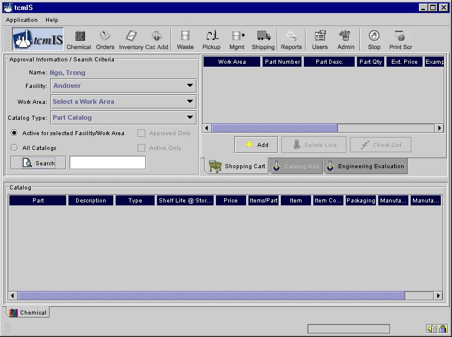

The section deals with the chemicals part of the tcmIS program.
tcmISä
Welcome to tcmISä (Total Chemical Management Information System), the web-based chemical management information system. This section describes how you will be able to use tcmISä for your material/chemical requests.
The different parts of this section show how chemicals can be ordered and tracked through tcmISä. These sections will also deal with how you can track your inventory and add new chemicals to your catalog and/or facility.
After entering your User Name and password, you will be logged in. which will take you to the screen shown below.

Please choose from the menu on the left to learn more.